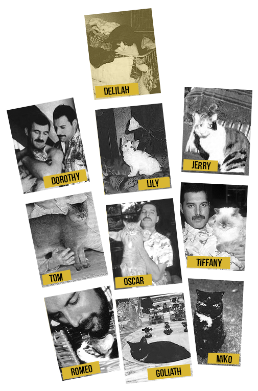
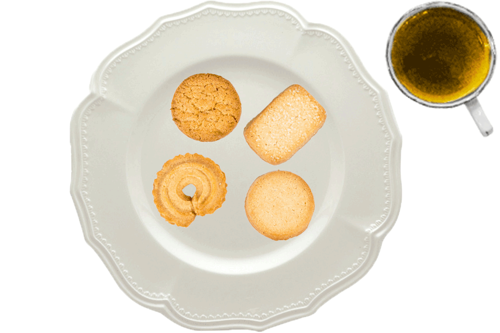
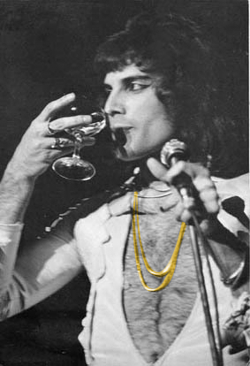
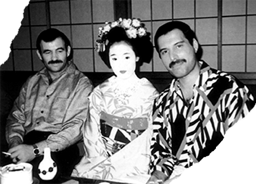

Freddie is ailurophile
Or in other words, is a cat lover. One of the most important things in the life of Freddie Mercury were his cats. He thought of them as equally important as humans. He had a lot of cats in his life, at a certain point he even had 10!

Spoiled Cats
Freddie Mercury just wanted the cats to be happy and have a loving home. It made him feel really good that he could do something like that. He spoiled the cats very much. They didn’t get normal cat food much. Mostly, he prepared some fresh
meat for them, like chicken. He also gave them a lot of toys and treats. When it was Christmas, he got them their own Christmas
stockings filled with treats and toys and when it was their birthday, they celebrated.
When he was on tours, he often
made phone calls to his cats. He wanted to hear them and make sure they were alright. Mary would than take the cat on her lap en hold the phone close to their face so they could hear hem well. His fans knew how fond Mercury was of his
cats, so they often sent stuff for his cats to his fan office. A lot of them also named their cat after Freddie, who was really flattered by those gestures.
It was really easy for everybody to see Freddies love for cats. On the inside of the album ‘Classic Queen’, you could see a portrait of Mercury wearing a vest with cats on it. If you look
close, you can see that the cats on the vest are actually his own.

What Now
Freddie Mercury knew he was going to die, but before that happened, he made sure that all of his beloved cats would be taken care of. All of them stayed at Garden Lodge and Mary took care of them. Today, they still live there and Delilah is often spotted on the top of the wall. So it’s clear that she is still the ruler of the house and that’s exactly what Freddie would have wanted.

Light Eater
Some of us live to eat, but Freddie was one of those people who ate to live. He was the master of moving food around the plate to give the appearance of having eaten a good amount. He did enjoy good food, but really didn’t need to consume very much. He loved entertaining guests at meals in the dining room at Garden Lodge and was able to disguise his non-eating by making sure everyone else was ok during the meal. Don’t get us wrong, Freddie always ate enough to keep him going, but his personal assistant said that he can’t remember one time when Freddie leant back in the chair saying ‘I’m stuffed!’
Wine Lover
Based on his personal assistant, as a rough guide Freddie drinks tea in the morning, the tea was Twinings Earl Grey. He likes tea with sugars and some milk, like other Brits do. In the later afternoon, he drinks champagne or wine and with food. The champagne was usually Louis Roederer Cristal and the white wine was his favourite imported from Switzerland, San Saphorin. Freddie was actually quite knowledgeable about wine and he would know which one he would want with various meals with friends. In the evening, he drinks vodka and tonic. His favourite vodka was Stolichnaya, but in some countries that isn’t available so he would drink Moscovskaya, really the same under a different name. Schweppes was the preferred mixer.

Favourite Restaurants
Over the years Freddie had many favourite restaurants and would spend many happy hours in them with friends. It is a shame most of them don’t exist anymore. To know more about his favourite restaurants, click on one of the icons.
Hot Why Not
Freddie loved spicy food, not necessarily chilli hot, but a good mix of spice. This was natural if you think back to his birthplace, Zanzibar, the spice island, and his mother would have prepared many traditional Persian dishes for him. He did like traditional ‘home cooking’, as well as the five stars gourmet restaurants. He always used to say at home he wanted mother’s cooking. For deluxe food there were plenty of restaurants to choose from. As his illness progressed so his taste buds suffered and he couldn’t take strong flavours. At that time his personal chef started cooking food with much less spice and made it easy to eat food. A perfect example of that progression was with scrambled eggs. At the start the chef always cooked the Indian variety with chilli and spices, that Freddie remembered from his youth, but by the last year it was served with only a small sprinkling of salt and pepper.
His chef always cooked the Indian variety with chilli and spices, that Freddie remembered from his youth, but by the last year it was served with only a small sprinkling of salt and pepper.
Christmas Dining with Freddie
Usually either on Christmas Eve or the day before, Freddie would invite friends around in the early evening for mince pies, sandwiches, and carol singing around the piano. Freddie was a great believer in tradition.
Breakfast Time
Freddie’s regular treat at Richoux was their Welsh Rarebit. Freddie did like his cheese on toast done with a touch of luxury.
Sushi and Sashimi

After touring Japan with Queen in 1975, Freddie’s favourite place on earth was Japan, its culture and art. He was overwhelmed by the reception Japanese audiences. If Japan is well known for their tasty traditional tasty foods, such as sushi and sashimi. Well, it’s not the first thing what Freddie loves about Japan. Life could be so frantic and Tokyo was always so busy, but he continually found it a place to recharge his batteries. He loves Japanese arts. He had a lovely collection of lacquered boxes, furniture in Japanese motifs, Japanese crockery and porcelains, and Hakata dolls.
He was acknowledged once as one of persons who has the largest collections of antique Japanese wood block prints in a private collection in the UK.